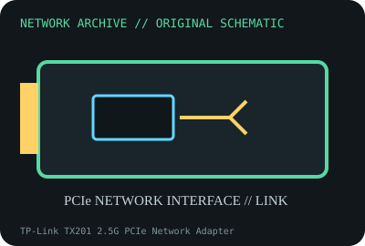

[ MODEL-SPECIFIC NETWORK HARDWARE ]
TP-Link TX201 2.5G PCIe Network Adapter
Single-port 2.5GbE desktop network card with a low-profile-ready PCIe design. Confirm exact product label and revision before applying specifications.

IDENTIFICATION: Confirm manufacturer PID, hardware revision, device ID or module suffix. Nominal standards/link rates are not measurements of payload performance.
Exact specifications and compatibility
| Dedicated subcategory | Ethernet adapters |
|---|---|
| Exact product/model | TP-Link TX201 2.5G PCIe Network Adapter |
| Bus, ports and physical interface | PCI Express x1 host interface; single RJ-45 2.5GBASE-T port; bracket package depends on regional SKU. |
| PHY, radio or protocol | NBASE-T auto-negotiation for 2.5G/1G/100BASE-TX on twisted-pair Ethernet. |
| Nominal rate (not measured) | Up to 2.5Gb/s nominal link; not measured application throughput. |
| Measured throughput | No measured benchmark is claimed for a physical specimen. A valid result must record host/peer, link partner, media/cable, driver/firmware, traffic pattern, test tool and duration. |
| Drivers, OS and firmware | TP-Link revision-specific Windows 10/11 driver downloads; Linux r8169 support depends on kernel/controller revision and PCI ID. |
| Compatibility | Requires PCIe x1, a 2.5GbE-capable peer and Cat 5e or better cabling; link falls back if peer/cable cannot sustain 2.5GbE. |
| Variant warning | TX201 is distinct from TG-3468 Gigabit and TX401 10GbE adapters. Confirm TX201 hardware version and regional driver package. |
Model and revision notes
TX201 is distinct from TG-3468 Gigabit and TX401 10GbE adapters. Confirm TX201 hardware version and regional driver package.
TP-Link revision-specific Windows 10/11 driver downloads; Linux r8169 support depends on kernel/controller revision and PCI ID.
Requires PCIe x1, a 2.5GbE-capable peer and Cat 5e or better cabling; link falls back if peer/cable cannot sustain 2.5GbE.
Archival, ESD and preservation notes
Record hardware revision, device ID, MAC and driver build. Store in ESD bag with bracket and keep RJ-45/PCIe contacts clean.
Document source URL, access date, document revision and specimen label/condition. Preserve without credentials or private configuration.
Primary manufacturer and standards sources
- TP-Link TX201 product specificationsPrimary manufacturer or standards documentation; verify exact SKU and host revision.
- TP-Link TX201 support and downloadsPrimary manufacturer or standards documentation; verify exact SKU and host revision.
- IEEE 802.3bz Ethernet standardsPrimary manufacturer or standards documentation; verify exact SKU and host revision.
Manufacturer statements cover the named part or its documented product family; the exact labeled revision and vendor compatibility list take precedence.